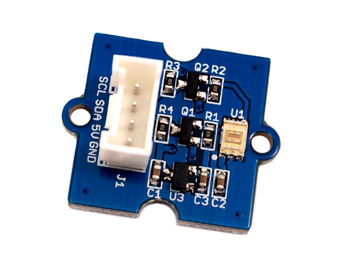
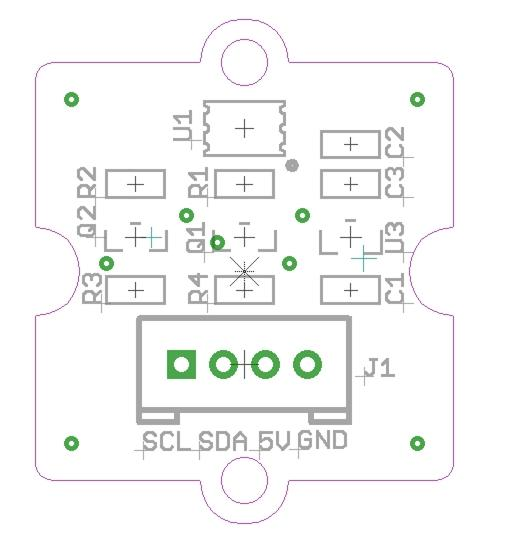
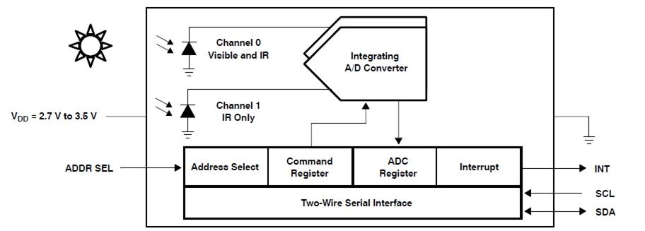
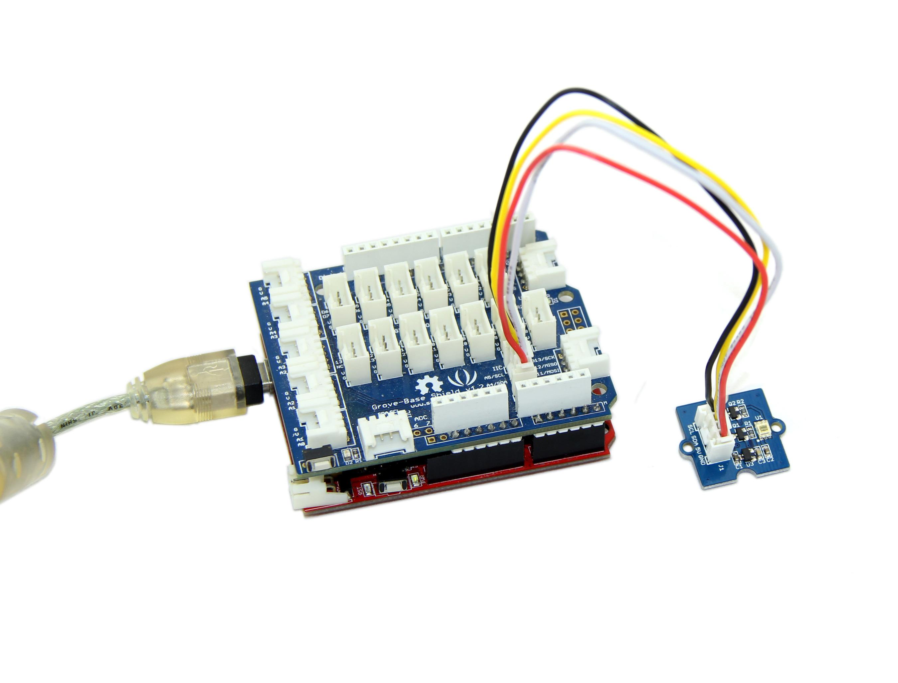
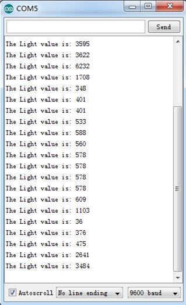
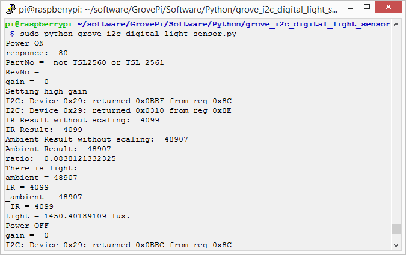
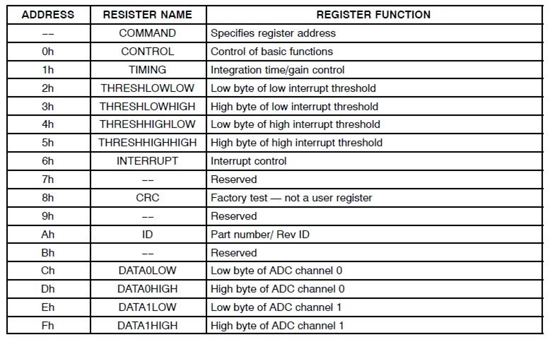
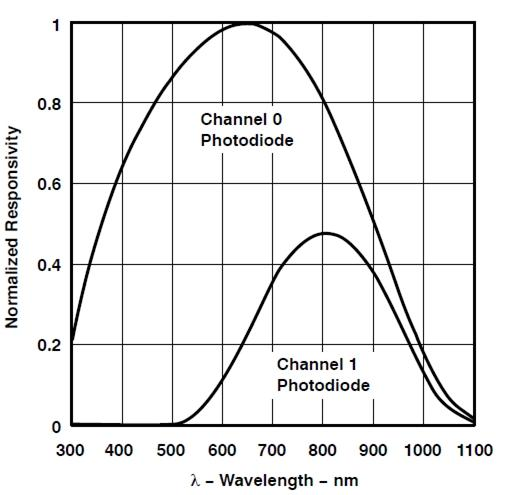

This module is based on the I2C light-to-digital converter TSL2561 to transform light intensity to a digital signal. Different from traditional analog light sensor, as Grove - Light Sensor, this digital module features a selectable light spectrum range due to its dual light sensitive diodes: infrared and full spectrum.
You can switch among three detection modes to take your readings. They are infrared mode, full spectrum and human visible mode. When running under the human visible mode, this sensor will give you readings just close to your eye feelings.

| Items | Min Type Max | Unit |
|---|---|---|
| Supply voltage, VDD | 3.3 5 5.1 | V |
| Operating temperature | -30 \ 70 | ℃ |
| SCL,SDA input low voltage | -0.5 \ 0.8 | V |
| SCL,SDA input high voltage | 2.3 \ 5.1 | V |

U1: TSL2561 IC, Light-To-Digital Converter.
U3: XC6206MR332 IC, Positive Voltage Regulators.
Q1,Q2: BSN20 IC, N-channel Enhancement Mode Vertical D-MOS Transistor.
SCL,SDA: I2C Signal Interface

1. Plug the Grove - Digital Light Sensor onto the I2C port on Grove - Base Shield, and then plug the base shield onto Arduino;

2. Download the library from here Digital Light Sensor Library;
3. Unzip it into the libraries file of Arduino IDE by the path: ..\arduino-1.0.1\libraries.
4. Create an Arduino sketch and paste the following codes to it or open the code directly by the path:File -> Example ->Digital_Light_Sensor->Digital_Light_Sensor.
/*
* Digital_Light_Sensor.ino
* A library for TSL2561
*
* Copyright (c) 2012 seeed technology inc.
* Website : www.seeed.cc
* Author : zhangkun
* Create Time:
* Change Log :
*
* The MIT License (MIT)
*
* Permission is hereby granted, free of charge, to any person obtaining a copy
* of this software and associated documentation files (the "Software"), to deal
* in the Software without restriction, including without limitation the rights
* to use, copy, modify, merge, publish, distribute, sublicense, and/or sell
* copies of the Software, and to permit persons to whom the Software is
* furnished to do so, subject to the following conditions:
*
* The above copyright notice and this permission notice shall be included in
* all copies or substantial portions of the Software.
*
* THE SOFTWARE IS PROVIDED "AS IS", WITHOUT WARRANTY OF ANY KIND, EXPRESS OR
* IMPLIED, INCLUDING BUT NOT LIMITED TO THE WARRANTIES OF MERCHANTABILITY,
* FITNESS FOR A PARTICULAR PURPOSE AND NONINFRINGEMENT. IN NO EVENT SHALL THE
* AUTHORS OR COPYRIGHT HOLDERS BE LIABLE FOR ANY CLAIM, DAMAGES OR OTHER
* LIABILITY, WHETHER IN AN ACTION OF CONTRACT, TORT OR OTHERWISE, ARISING FROM,
* OUT OF OR IN CONNECTION WITH THE SOFTWARE OR THE USE OR OTHER DEALINGS IN
* THE SOFTWARE.
*/
#include <Wire.h>
#include <Digital_Light_TSL2561.h>
void setup()
{
Wire.begin();
Serial.begin(9600);
TSL2561.init();
}
void loop()
{
Serial.print("The Light value is: ");
Serial.println(TSL2561.readVisibleLux());
delay(1000);
}
5. Upload the code. Please click here if you do not know how to upload.
6. Open the serial monitor to see the result.

In the case of completely light matte, The output result is 0.
1.You should have got a raspberry pi and a grovepi or grovepi+.
2.You should have completed configuring the development enviroment, otherwise follow here.
3.Connection
4.Navigate to the demos' directory:
cd yourpath/GrovePi/Software/Python/grove_i2c_digital_light_sensor/
nano grove_i2c_digital_light_sensor.py # "Ctrl+x" to exit #
import time
import smbus
from Adafruit_I2C import Adafruit_I2C
import RPi.GPIO as GPIO
import grovepi
from smbus import SMBus
global I2C_ADDRESS
global I2C_SMBUS
global _CMD
global _CMD_CLEAR
global _CMD_WORD
global _CMD_BLOCK
global _REG_CONTROL
global _REG_TIMING
global _REG_ID
global _REG_BLOCKREAD
global _REG_DATA0
global _REG_DATA1
global _POWER_UP
global _POWER_DOWN
global _GAIN_LOW
global _GAIN_HIGH
global _INTEGRATION_START
global _INTEGRATION_STOP
global _INTEGRATE_13
global _INTEGRATE_101
global _INTEGRATE_402
global _INTEGRATE_DEFAULT
global _INTEGRATE_NA
global _GAIN
global _MANUAL
global _INTEG
global _CHANNEL0
global _CHANNEL1
global _D0
global _D1
global _LUX
# bus parameters
rev = GPIO.RPI_REVISION
if rev == 2 or rev == 3:
I2C_SMBUS = smbus.SMBus(1)
else:
I2C_SMBUS = smbus.SMBus(0)
# Default I2C address
I2C_ADDRESS = 0x29
# Commands
_CMD = 0x80
_CMD_CLEAR = 0x40
_CMD_WORD = 0x20
_CMD_BLOCK = 0x10
# Registers
_REG_CONTROL = 0x00
_REG_TIMING = 0x01
_REG_ID = 0x0A
_REG_BLOCKREAD = 0x0B
_REG_DATA0 = 0x0C
_REG_DATA1 = 0x0E
# Control parameters
_POWER_UP = 0x03
_POWER_DOWN = 0x00
# Timing parameters
_GAIN_LOW = 0b00000000
_GAIN_HIGH = 0b00010000
_INTEGRATION_START = 0b00001000
_INTEGRATION_STOP = 0b00000000
_INTEGRATE_13 = 0b00000000
_INTEGRATE_101 = 0b00000001
_INTEGRATE_402 = 0b00000010
_INTEGRATE_DEFAULT = _INTEGRATE_402
_INTEGRATE_NA = 0b00000011
# Testing parameters
ambient = None
IR = None
_ambient = 0
_IR = 0
_LUX = None
class Tsl2561(object):
i2c = None
def _init__(self, bus = I2C_SMBUS, addr = I2C_ADDRESS, debug = 1, pause = 0.8): # set debug = 0 stops debugging output on screen
assert(bus is not None)
assert(addr > 0b000111 and addr < 0b1111000)
self.i2c = Adafruit_I2C(addr)
self.pause = pause
self.debug = debug
self.gain = 0
self._bus = bus
self._addr = addr
ambient = None
IR = None
self._ambient = 0
self._IR = 0
self._LUX = None
self._control(_POWER_UP)
self._partno_revision()
# @property
def _lux(self, gain):
'''
Returns a lux value. Returns None if no valid value is set yet.
'''
var = readLux(gain)
ambient = var[0]
IR = var[1]
self._ambient = var[2]
self._IR = var[3]
self_LUX = var[4]
return (ambient, IR, self._ambient, self._IR, self._LUX)
def setGain(self, gain = 1):
""" Set the gain """
if (gain != self.gain):
if (gain==1):
cmd = _CMD | _REG_TIMING
value = 0x02
self.i2c.write8(cmd, value) # Set gain = 1X and timing = 402 mSec
if (self.debug):
print "Setting low gain"
else:
cmd = _CMD | _REG_TIMING
value = 0x12
self.i2c.write8(cmd, value) # Set gain = 16X and timing = 402 mSec
if (self.debug):
print "Setting high gain"
self.gain=gain; # Safe gain for calculation
time.sleep(self.pause) # Pause for integration (self.pause must be bigger than integration time)
def readWord(self, reg):
""" Reads a word from the TSL2561 I2C device """
try:
wordval = self.i2c.readU16(reg)
newval = self.i2c.reverseByteOrder(wordval)
if (self.debug):
print("I2C: Device 0x%02X: returned 0x%04X from reg 0x%02X" % (self._addr, wordval & 0xFFFF, reg))
return newval
except IOError:
print("Error accessing 0x%02X: Chcekcyour I2C address" % self._addr)
return -1
def readFull(self, reg = 0x8C):
""" Read visible + IR diode from the TSL2561 I2C device """
return self.readWord(reg);
def readIR(self, reg = 0x8E):
""" Reads only IR diode from the TSL2561 I2C device """
return self.readWord(reg);
def readLux(self, gain = 0):
""" Grabs a lux reading either with autoranging (gain=0) or with specific gain (1, 16) """
if (self.debug):
print "gain = ", gain
if (gain == 1 or gain == 16):
self.setGain(gain) # Low/highGain
ambient = self.readFull()
IR = self.readIR()
elif (gain == 0): # Auto gain
self.setGain(16) # First try highGain
ambient = self.readFull()
if (ambient < 65535):
IR = self.readIR()
if (ambient >= 65535 or IR >= 65535): # Value(s) exeed(s) datarange
self.setGain(1) # Set lowGain
ambient = self.readFull()
IR = self.readIR()
# If either sensor is saturated, no acculate lux value can be achieved.
if (ambient == 0xffff or IR == 0xffff):
self._LUX = None
self._ambient = None
self._IR = None
return (self.ambient, self.IR, self._ambient, self._IR, self._LUX)
if (self.gain == 1):
self._ambient = 16 * ambient # Scale 1x to 16x
self._IR = 16 * IR # Scale 1x to 16x
else:
self._ambient = 1 * ambient
self._IR = 1 * IR
if (self.debug):
print "IR Result without scaling: ", IR
print "IR Result: ", self._IR
print "Ambient Result without scaling: ", ambient
print "Ambient Result: ", self._ambient
if (self._ambient == 0):
# Sometimes, the channel 0 returns 0 when dark ...
self._LUX = 0.0
return (ambient, IR, self._ambient, self._IR, self._LUX)
ratio = (self._IR / float(self._ambient)) # Change to make it run under python 2
if (self.debug):
print "ratio: ", ratio
if ((ratio >= 0) and (ratio <= 0.52)):
self._LUX = (0.0315 * self._ambient) - (0.0593 * self._ambient * (ratio ** 1.4))
elif (ratio <= 0.65):
self._LUX = (0.0229 * self._ambient) - (0.0291 * self._IR)
elif (ratio <= 0.80):
self._LUX = (0.0157 * self._ambient) - (0.018 * self._IR)
elif (ratio <= 1.3):
self._LUX = (0.00338 * self._ambient) - (0.0026 * self._IR)
elif (ratio > 1.3):
self._LUX = 0
return (ambient, IR, self._ambient, self._IR, self._LUX)
def _partno_revision(self):
""" Read Partnumber and revision of the sensor """
cmd = _CMD | _REG_ID
value = self.i2c.readS8(cmd)
part = str(value)[7:4]
if (part == "0000"):
PartNo = "TSL2560CS"
elif (part == "0001"):
PartNo = "TSL2561CS"
elif (part == "0100"):
PartNo = "TSL2560T/FN/CL"
elif (part == "0101"):
PartNo = "TSL2561T/FN/CL"
else:
PartNo = "not TSL2560 or TSL 2561"
RevNo = str(value)[3:0]
if (self.debug):
print "responce: ", value
print "PartNo = ", PartNo
print "RevNo = ", RevNo
return (PartNo, RevNo)
def _control(self, params):
if (params == _POWER_UP):
print "Power ON"
elif (params == _POWER_DOWN):
print "Power OFF"
else:
print "No params given"
cmd = _CMD | _REG_CONTROL | params
self.i2c.write8(self._addr, cmd) # select command register and power on
time.sleep(0.4) # Wait for 400ms to power up or power down.
def main():
TSL2561 = Tsl2561()
TSL2561._init__(I2C_SMBUS, I2C_ADDRESS)
while (True):
gain=0
val = TSL2561.readLux(gain)
ambient = val[0]
IR = val[1]
_ambient = val[2]
_IR = val[3]
_LUX = val[4]
if (ambient == 0xffff or IR == 0xffff):
print ("Sensor is saturated, no lux value can be achieved:")
print ("ambient = " + ambient)
print ("IR = " + IR)
print ("light = " + _LUX)
elif (_ambient == 0):
print ("It's dark:")
print ("ambient = " + str(ambient))
print ("IR = " + str(IR))
print ("_ambient = " + str(_ambient))
print ("_IR = " + str(_IR))
print ("Light = " + str(_LUX) + " lux.")
else:
print ("There is light:")
print ("ambient = " + str(ambient))
print ("IR = " + str(IR))
print ("_ambient = " + str(_ambient))
print ("_IR = " + str(_IR))
print ("Light = " + str(_LUX) + " lux.")
time.sleep(2)
ambient = None
IR = None
_ambient = 0
_IR = 0
_LUX = None
TSL2561._control(_POWER_DOWN)
if __name__=="__main__":
main()
5.Run the demo.
sudo python grove_i2c_digital_light_sensor.py
6.Result

The TSL2561 is controlled and monitored by sixteen registers (three are reserved) and a command register accessed through the serial interface. These registers provide for a variety of control functions and can be read to determine results of the ADC conversions. The register set is summarised as show below.


Two channels of the digital light sensor have different response characteristic. That's why you can choose its working mode by having both of them on or one of them off.
| Revision | Descriptions | Release |
|---|---|---|
| Grove - Digit light sensor v0.9b | Initial public release for Grove module |
Grove - Digital Light Sensor Eagle File(include printed PDF format files)
Library Github Repo
TSL2561 Datasheet
If you have questions or other better design ideas, you can go to our forum or wish to discuss.
Copyright (c) 2008-2016 Seeed Development Limited (www.seeedstudio.com / www.seeed.cc)